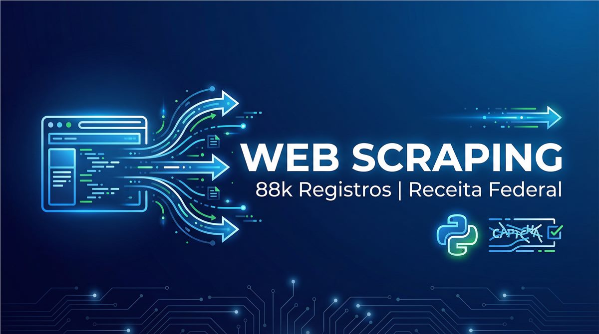

Web scraping · Python & AWS
Extração de dados públicos da Receita Federal
Pipeline para automatizar coleta, tratamento e disponibilização de dados cadastrais em uma arquitetura preparada para escala.
Foco Extração automatizada, processamento distribuído e dados consultáveis.